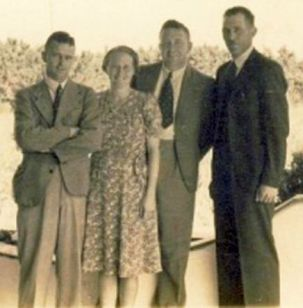

|
 |
Die vier kinders van b7.c7.d10. Philippus Arnoldus Henning *21-9-1877 en sy vrou Johanna Elizabeth (gebore Henning). V.l.nr. Beyers *20-1-1915 (e4); Dot (Martjie Elizabeth) *7-8-1907 (e2); Dempsey *8-9-1905 (e1); Hennie of Lappies (Pieter Hendrik) *20-1-1910 (e3)
Beskou lys van mense op foto

|
Philippus Arnold (Philip) Henning *19-3-1948 (a2.b7.c7.d10.e4.f2.) en sy bruid Anna Johanna Maria (Annetjie) Jooste *1-12-1950 op hul troue op 9-12-1972. Links op die foto is Philip se ouers, Christiaan Beyers Henning *20-1-1915 en Alma Mathilde (gebore van Wyk) *2-7-1919
Beskou lys van mense op foto